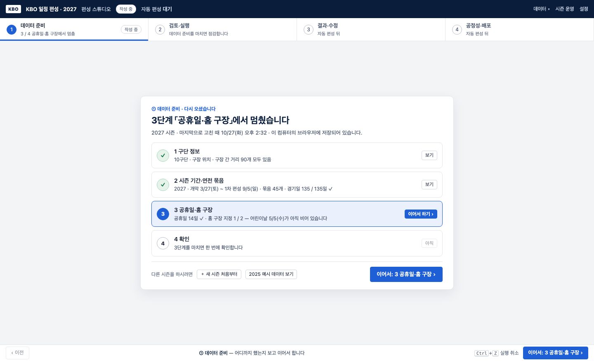
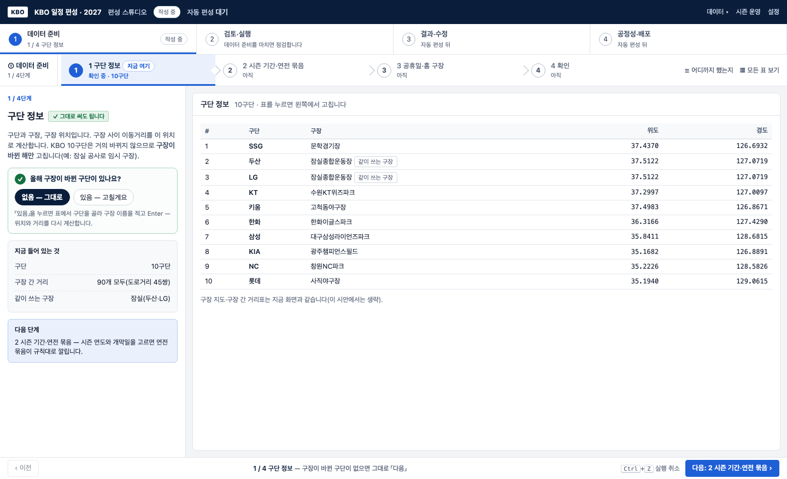
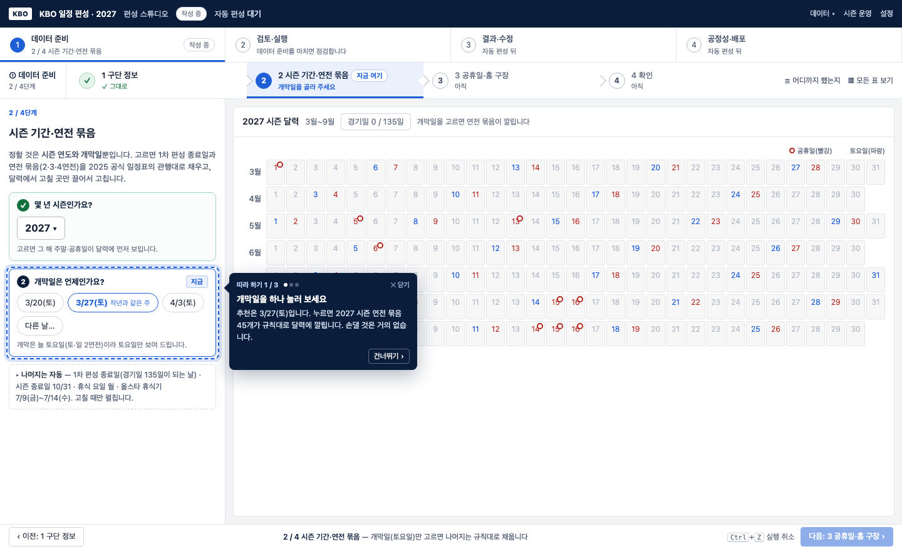
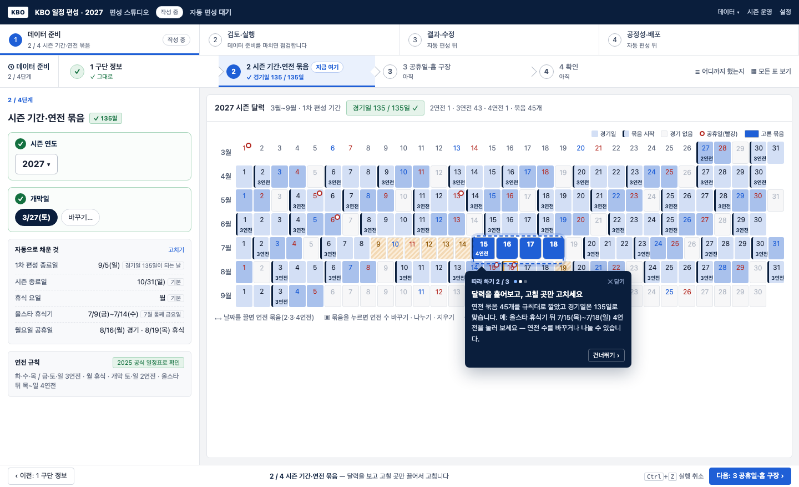
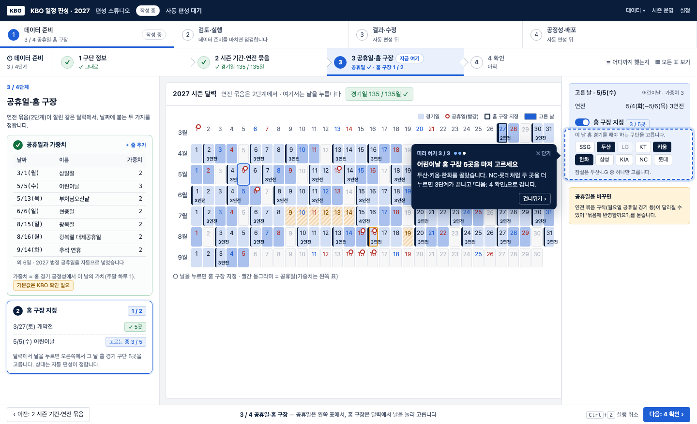
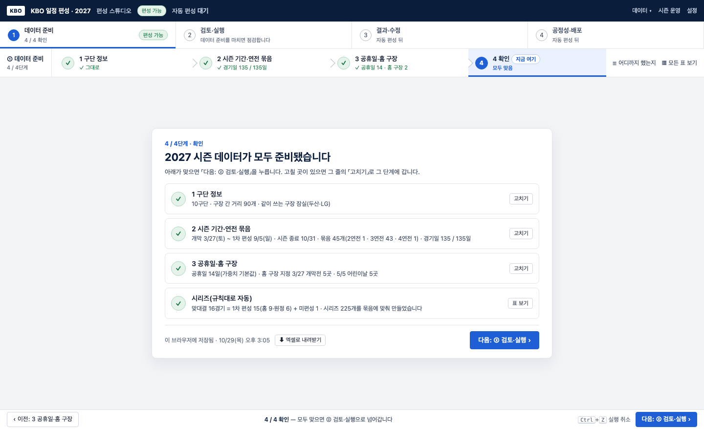

① 데이터 준비 — 단계 흐름 시안
2026-10-29 사용자와 정한 것: ① 안을 4단계로 나누고, 지금 어느 단계인지 늘 보이게, 비어 있으면 그 자리에서 따라 하기로 안내, 다시 들어오면 「어디까지 했는지」 한 장부터. 데이터는 이 브라우저에 저장(DB는 나중에). 정적 시안이라 실제 화면은 아직 바꾸지 않았습니다.
순서
1 구단 정보→2 시즌 기간·연전 묶음 (같이)→3 공휴일·홈 구장 (같은 달력)→4 확인→② 검토·실행
- 단계 띠: 위 ①~④ 아래에 ① 안의 4단계를 늘 보여 줍니다. 단계마다 상태 한 줄(「✓ 경기일 135 / 135일」, 「개막일을 골라 주세요」)과 「지금 여기」. 끝난 단계는 초록, 지금은 파랑.
- 2단계는 손이 거의 안 가게: 정할 것은 시즌 연도와 개막일(토요일 중 고르기)뿐. 1차 편성 종료일은 「경기일 135일이 되는 날」로, 올스타 휴식기는 7월 둘째 금요일로, 연전 묶음은 2025 공식 일정표 관행대로 자동. 고칠 곳만 달력에서 끕니다.
- 3단계는 2단계가 끝난 뒤 같은 달력에서: 공휴일 표(가중치)와 날을 눌러 홈 구장 지정. 공휴일을 바꿔 묶음 규칙이 달라지면 「묶음에 반영할까요?」를 묻습니다.
- 데이터가 이미 있으면 단계를 하나씩 눌러 확인합니다(4 확인 화면의 「고치기」).
0 · 다시 왔을 때 — 어디까지 했는지

1 · 구단 정보

2 · 시즌 기간·연전 묶음 — 비어 있을 때 (따라 하기 1 / 3)

2 · 시즌 기간·연전 묶음 — 개막일을 고른 뒤 (따라 하기 2 / 3)

3 · 공휴일·홈 구장 — 같은 달력에서 (따라 하기 3 / 3)

4 · 확인 — 다음은 ② 검토·실행

여쭤볼 것
- 단계 띠(① 아래 4칸)가 지금 어디인지 충분히 보이나요? 아니면 왼쪽 세로 목록이 나을까요?
- 2단계에서 개막일을 고르면 바로 묶음을 깔까요(시안), 아니면 「규칙대로 채우기」를 한 번 누르게 할까요?
- 따라 하기는 단계마다 처음 한 번씩(시안: 2단계 1·2, 3단계 3)이면 될까요?
- 원하시면 이 표준안에서 한 부분씩만 다른 대안(예: 단계 표시 방식, 2단계 입력 방식)을 2~3개 더 만들어 비교해 드립니다.